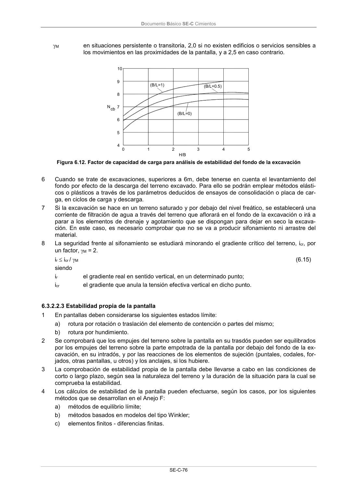

DB-SE-C Cimientos · edición 2019-12-20 · capa oficial
Documento DB-SE-C-oficial · SHA-256 del PDF a71133f4b0dca253e45ea3071c70f2a512354bcc5cd841bf89b1a502f567ac5e
Copia fiel del PDF fuente · Fuente oficial
Ficha de la disposición en la fuente oficial
Formatos: JSON del segmento · Markdown
6.3.2.2.3 Estabilidad propia de la pantalla 1 En pantallas deben considerarse los siguientes estados límite: a) rotura por rotación o traslación del elemento de contención o partes del mismo; b) rotura por hundimiento. 2 Se comprobará que los empujes del terreno sobre la pantalla en su trasdós pueden ser equilibrados por los empujes del terreno sobre la parte empotrada de la pantalla por debajo del fondo de la ex- cavación, en su intradós, y por las reacciones de los elementos de sujeción (puntales, codales, for- jados, otras pantallas, u otros) y los anclajes, si los hubiere. 3 La comprobación de estabilidad propia de la pantalla debe llevarse a cabo en las condiciones de corto o largo plazo, según sea la naturaleza del terreno y la duración de la situación para la cual se comprueba la estabilidad. 4 Los cálculos de estabilidad de la pantalla pueden efectuarse, según los casos, por los siguientes métodos que se desarrollan en el Anejo F: a) métodos de equilibrio límite; b) métodos basados en modelos del tipo Winkler; c) elementos finitos - diferencias finitas. Documento Básico SE-C Cimientos SE-C-77
